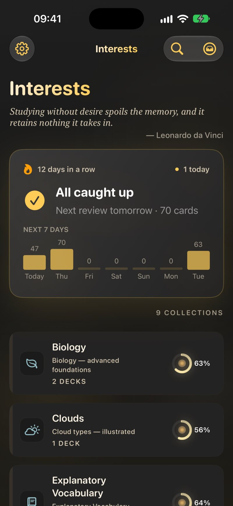
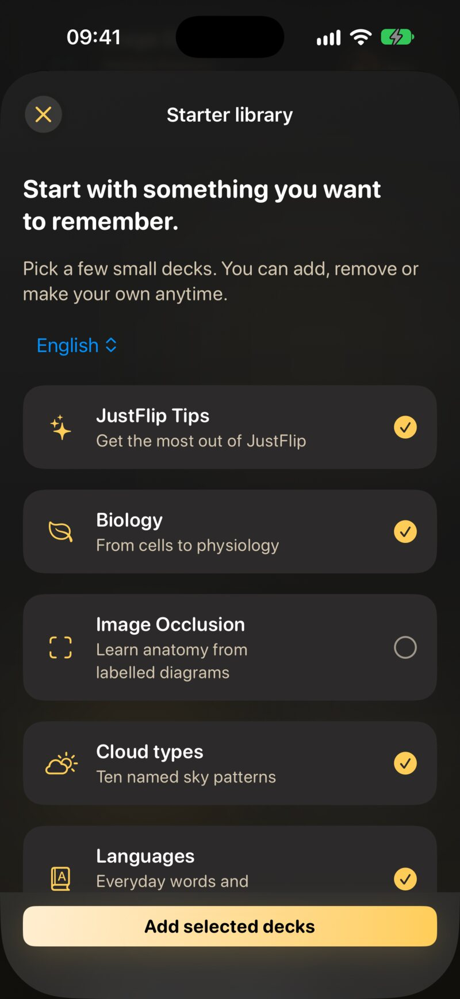
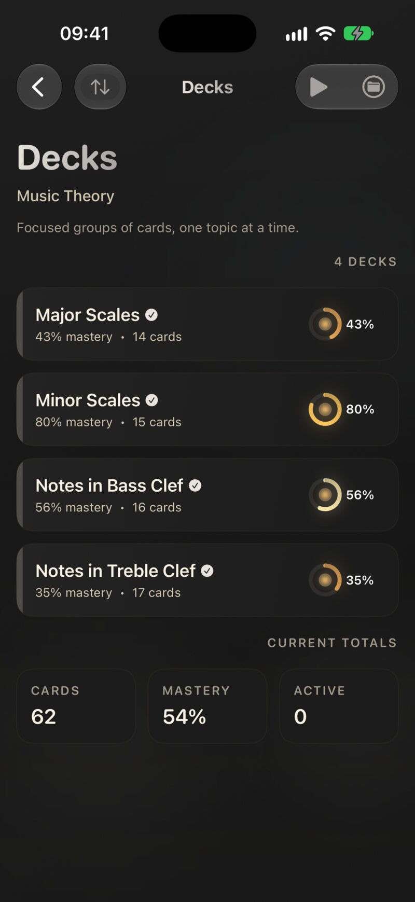

1.1 La idea en un párrafo
Recuerdas algo mejor cuando tienes que sacarlo de tu cabeza que cuando lo vuelves a leer, y mejor aún cuando esos intentos se reparten en el tiempo. Eso es la repetición espaciada. Cada vez que respondes una tarjeta, le dices a JustFlip! lo bien que te la sabías. Una tarjeta que te sabes vuelve al cabo de unos días, luego de unas semanas, luego de meses. Una tarjeta que fallaste vuelve en cuestión de minutos. Dedicas tu tiempo a lo que estás a punto de olvidar, no a lo que ya sabes. Cómo crecen los intervalos se explica en el capítulo 6.
1.2 Tu biblioteca
Todo lo que aprendes vive en una biblioteca de tres niveles:
| Nivel | Qué es | Ejemplo |
|---|---|---|
| Interés | Un tema, con su propio icono | Inglés |
| Mazo | Un grupo concreto de tarjetas dentro de un interés | Verbos irregulares |
| Tarjeta | Una pregunta y una respuesta | to go → ir |
Un interés contiene mazos, y un mazo contiene tarjetas. Una tarjeta pertenece exactamente a un mazo, pero puedes moverla a otro cuando quieras.

1.2.1 Nombres
JustFlip! considera iguales dos nombres de interés cuando solo se diferencian en mayúsculas, acentos o espacios. Si ya tienes Inglés y creas ingles, no aparece un segundo interés: JustFlip! usa simplemente el que ya tienes. Esto es lo que evita que dos dispositivos creen cada uno su propia copia de un interés antes de sincronizarse.
Los nombres de los mazos no se comprueban así, de modo que JustFlip! no te impedirá dar el mismo nombre a dos mazos de un mismo interés. Aun así, evítalo: cuando importas un mazo, JustFlip! añade las tarjetas al mazo de ese interés que tiene exactamente el mismo nombre. Con dos mazos que se llaman igual, no puedes estar seguro de cuál se las lleva. El capítulo 5 explica la importación en detalle.
1.2.2 Reordenar
- Intereses. Abre el menú Añadir o importar (el icono de la bandeja, arriba en la pantalla Intereses), elige Reordenar y arrastra las filas. Toca Listo cuando termines. Para llevar rápidamente un interés al principio, mantenlo pulsado y elige Mover al principio. Esa es también la forma de reordenar con VoiceOver.
- Mazos. En la pantalla Mazos, abre el menú de la carpeta, elige Editar y arrastra los mazos a su sitio.
- Tarjetas. En un mazo, abre el menú Más acciones (el botón •••) y elige Editar. La lista vuelve a su orden original mientras arrastras, porque una lista ordenada no se puede reorganizar a mano.
1.2.3 Mantén pulsado para ver más
La mayoría de las acciones están en el menú contextual: mantén pulsada una fila en el iPhone o el iPad, o haz clic con el botón secundario en el Mac.
| Sobre | El menú contextual ofrece |
|---|---|
| Un interés | Editar interés, Mover al principio, Importar tarjetas, Exportar archivo, Exportar estadísticas, Fusionar con, Eliminar |
| Un mazo | Editar mazo, Preguntar a la IA (Pro), Mover a interés, Fusionar con, Eliminar mazo |
| Una tarjeta | Leer desde aquí (Pro), Editar tarjeta, Preguntar a la IA, Mover a mazo, Retirar tarjeta o Reactivar tarjeta, Eliminar |
Fusionar con y Mover a interés solo aparecen cuando hay algún sitio con el que fusionar o al que mover. Fusionar un mazo mueve todas sus tarjetas al mazo que elijas y luego quita el mazo, que se ha quedado vacío; fusionar intereses funciona igual, pero con mazos.
Los editores de interés y de mazo también incluyen una Prioridad de aprendizaje y un interruptor Incluir en la búsqueda del dispositivo. La prioridad se explica en el capítulo 6, y la búsqueda del dispositivo (Spotlight), en el capítulo 8.
1.2.4 Marcas y etiquetas
Dos pequeñas herramientas te ayudan a volver a encontrar tarjetas. Las dos se ponen en el editor de tarjetas (capítulo 3).
- Una marca es un único marcador de color en una tarjeta: rojo, naranja, verde o azul. Lo que significa lo decides tú, por ejemplo «consultarlo con mi profesora».
- Las etiquetas son palabras libres, y una tarjeta puede tener todas las que quieras. Buscar tarjetas (la lupa de la pantalla Intereses) busca en preguntas, respuestas y etiquetas de toda tu biblioteca.
1.3 Tu primer mazo, de tres formas
1.3.1 Elige un mazo de inicio
Cuando abres JustFlip! por primera vez con la biblioteca vacía, te ofrece la biblioteca de inicio: unos cuantos mazos pequeños y ya hechos, con algunos ya marcados. Elige arriba un idioma para los mazos, marca lo que te interese y toca Añadir mazos seleccionados. ¿No te apetece ahora? Quizá más tarde la cierra.
La oferta aparece solo una vez, pero la biblioteca sigue a tu alcance: ve a Ajustes › Ayuda › Biblioteca cuando quieras. Para más mazos, echa un vistazo a just-flip.app/decks.

1.3.2 Escribe el tuyo
- En la pantalla Intereses, abre el menú Añadir o importar y elige Nuevo interés. Ponle un nombre y elige un icono.
- Abre el interés, luego abre el menú de la carpeta y elige Nuevo mazo.
- Abre el mazo, abre el menú ••• y elige Añadir tarjeta.
El capítulo 3 cubre todo lo que puede contener una tarjeta.
1.3.3 Importa uno
JustFlip! lee paquetes de Anki (.apkg), hojas de cálculo
CSV y sus propios archivos .flashcards. Elige Importar tarjetas en el menú Añadir o
importar, o suelta un archivo sobre la pantalla Intereses. Pegar tarjetas, en el mismo menú, convierte en un mazo
una lista que hayas copiado, por ejemplo de la respuesta de una IA de
chat. Puedes pedirle a una IA que te escriba un mazo entero con el prompt para IA o con la
skill para agentes de
programación. El capítulo 5 lo explica todo paso a paso.
1.4 Un recorrido por las pantallas
En el iPhone te mueves de izquierda a derecha: Intereses, luego una lista de mazos y luego las tarjetas de un mazo. En el iPad y el Mac, esas mismas pantallas están una al lado de otra (capítulo 8).
| Pantalla | Cómo llegar | Para qué sirve |
|---|---|---|
| Intereses | La pantalla de inicio | El panel Hoy y todos tus temas |
| Mazos | Toca un interés | Los mazos de un interés, con su dominio y número de tarjetas, y un menú de repaso para todo el interés |
| Tarjetas | Toca un mazo | La lista de tarjetas: voltéalas para hojearlas, añade y edita, y empieza un repaso del mazo con el botón ▶ |
| Pruebas | Empieza un repaso | Una tarjeta cada vez: voltear, evaluar, siguiente |
| Buscar tarjetas | La lupa de Intereses | Todas las tarjetas y etiquetas de tu biblioteca |
| Estadísticas (Pro) | Menú del engranaje › Estadísticas | Retención, previsión y constancia a lo largo del tiempo (capítulo 9) |
| Ajustes | Menú del engranaje › Ajustes | Comportamiento del repaso, voz, recordatorios, apariencia, seguridad de datos |
| Novedades | Menú del engranaje › Novedades | Funciones recientes |
El panel Hoy, arriba en la pantalla Intereses, es por el que conviene empezar. Muestra cuántas tarjetas te esperan entre todos tus intereses y empieza un repaso con un solo toque. Aparece en cuanto tu biblioteca tiene tarjetas. El capítulo 2 trata entero de él.

Cada mazo muestra un anillo de dominio, que se va llenando a medida que conoces sus tarjetas. El punto de dentro se calienta conforme vencen los repasos. Cuando un punto brilla, ese mazo te está pidiendo atención.
1.5 Introducción y guías
La primera vez que abres JustFlip!, un breve recorrido de bienvenida te enseña cómo se voltea una tarjeta, cómo se evalúa deslizando y qué hace la repetición espaciada. Por el camino te deja elegir un tamaño de texto cómodo y, en su última página, activar un recordatorio diario de repaso. Puedes tocar Omitir en cualquier momento.
Después, aparecen guías sobre la marcha la primera vez que llegas a ciertas pantallas. Una guía es una pequeña tarjeta con una flecha que señala el control que explica:
| Dónde | La guía explica |
|---|---|
| Intereses | El botón Iniciar repaso, que repasa las tarjetas pendientes de todos tus intereses |
| Pruebas | Evalúa tu memoria: los botones de evaluación |
| Mazos | Más en cada mazo: mantén pulsado un mazo para ver más acciones |
| Estadísticas | Elige qué medir: el selector de interés |
Cada guía aparece una sola vez. Para volver a verlas:
- Ajustes › Ayuda › Introducción vuelve a reproducir el recorrido de bienvenida.
- Ajustes › Ayuda › Guías restablece todas las guías, para que cada una vuelva a aparecer la próxima vez que llegues a su pantalla.
1.6 Gratis y Pro
JustFlip! es gratis, sin límite de tarjetas. JustFlip! Pro elimina los dos límites de la biblioteca y desbloquea un puñado de funciones avanzadas:
| Función | Gratis | Pro |
|---|---|---|
| Intereses | 3 | Ilimitados |
| Mazos por interés | 5 | Ilimitados |
| Tarjetas | Ilimitadas | Ilimitadas |
| Importación, CSV incluido | ✓ | ✓ |
| Sincronización con iCloud | ✓ | ✓ |
| Preguntar a la IA sobre una tarjeta | ✓ | ✓ |
| Preguntar a la IA sobre un mazo entero | — | ✓ |
| Escucha en segundo plano (Leer tarjetas) | — | ✓ |
| Estadísticas | — | ✓ |
| Seguimientos de progreso | — | ✓ |
| Programación inteligente (beta) | — | ✓ |
Los límites se aplican cuando creas un interés o un mazo, y cuando mueves un mazo a un interés que ya tiene cinco. Lo que es solo de Pro nunca se esconde: lleva un pequeño candado y, al tocarlo, se abre la pantalla de Pro y te explica qué desbloquearía.
Para ver los planes, ve a Ajustes › Funciones Pro. Hay tres: Mensual, Anual y De por vida, que pagas una sola vez. Cuando un plan incluye una prueba gratuita a la que tienes derecho, la pantalla de Pro muestra Prueba gratuita disponible debajo.
1.6.1 Restaurar una compra
¿Compraste Pro en otro dispositivo o has reinstalado la app? Abre Ajustes › Funciones Pro y toca Restaurar compras. Usa la misma cuenta de Apple con la que compraste Pro. Si no aparece nada, JustFlip! dice No se encontraron compras anteriores.
Ajustes › Cuenta muestra tu ID de usuario de la app con un botón Copiar ID. Puede que soporte te lo pida cuando escribas por una compra.
1.7 Eliminar, y recuperar cosas
Un interés, un mazo o una tarjeta se eliminan desde su menú contextual. Al eliminar un interés se va con él todo lo que contiene: cada mazo, cada tarjeta y todo tu progreso de aprendizaje.
Un interés, mazo o tarjeta eliminado desaparece al momento, en todos los dispositivos. Antes de eliminar un interés que quizá quieras recuperar, elige Exportar archivo en su menú contextual. El archivo conserva sus mazos, tarjetas y progreso, y puedes volver a importarlo más adelante.
Ajustes › Seguridad de datos › Eliminados recientemente guarda los intereses y mazos que JustFlip! ha apartado para ti, por ejemplo la copia vacía que queda tras una fusión. Cada uno espera ahí 30 días, y puedes recuperarlo con Restaurar o quitarlo para siempre con Eliminar.
JustFlip! también hace copias de seguridad automáticas de tu biblioteca. Las copias de seguridad, la restauración y las exportaciones se explican en el capítulo 10.
¿Te sabes una tarjeta tan bien que solo te hace perder el tiempo? No la elimines: retírala. Una tarjeta retirada sale de tus repasos pero conserva su historial, y puedes recuperarla cuando quieras. El capítulo 2 te enseña cómo.